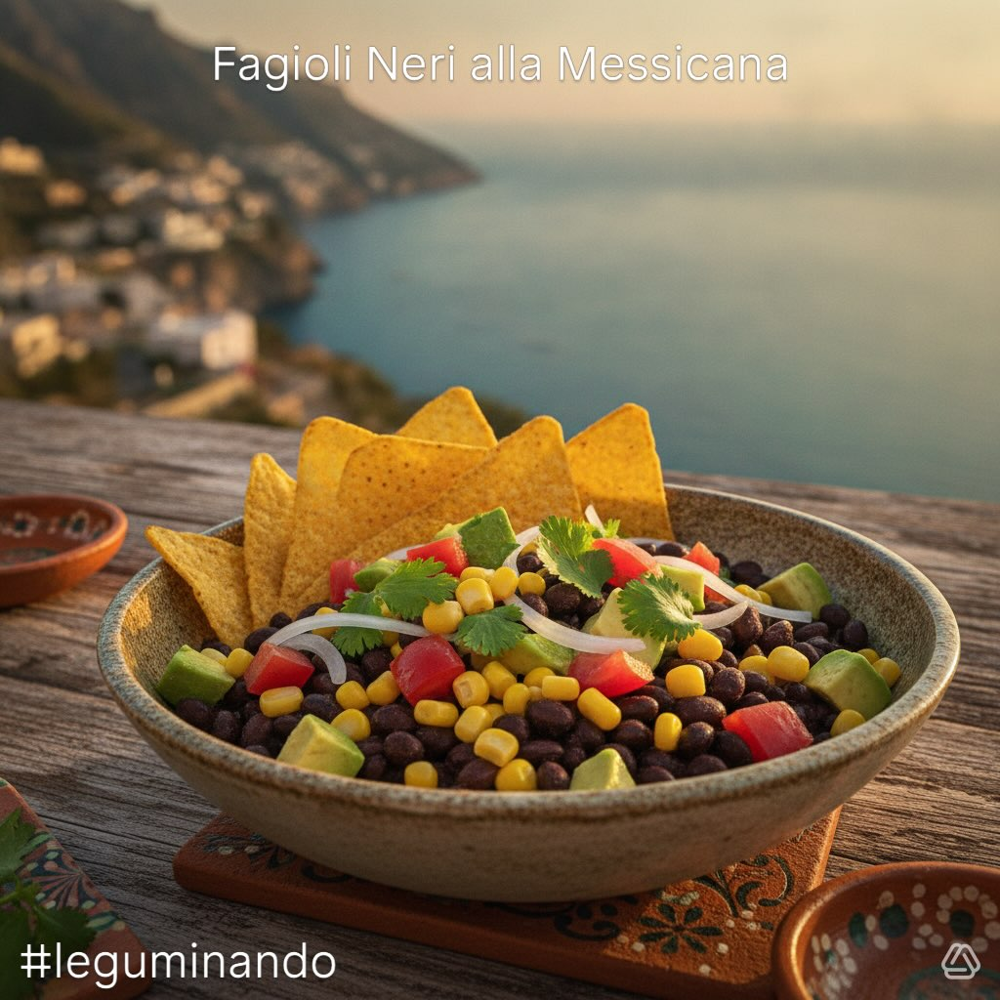

Fagioli Neri alla Messicana
Un'insalata fresca e ricca di sapori messicani: fagioli neri, mais, avocado e pomodorini conditi con lime, cumino e coriandolo. Pronta in soli 15 minuti, perfetta per le giornate estive.
Ingredienti (per 2-3 persone)
- 300 g fagioli neri precotti (scolati e risciacquati)
- 150 g mais fresco a chicchi (crudo o leggermente sbollentato)
- 200 g pomodorini ciliegino (tagliati a metà)
- 1 avocado medio (a cubetti)
- ½ cipolla rossa (affettata sottile)
- 1 peperoncino fresco (opzionale, a fette)
- 2 lime (succo + scorza grattugiata)
- 1 mazzetto di coriandolo fresco (solo foglie, tritate grossolanamente)
- 3 cucchiai olio extravergine d'oliva
- Sale marino e pepe nero q.b.
- ½ cucchiaino di cumino in polvere
- 50 g nachos o tortilla chips (per la croccantezza finale)
👨🍳 Preparazione (15 minuti)
- Base (5 minuti): scola i fagioli neri e risciacqua abbondantemente sotto acqua fredda. Sgrana il mais se fresco, o usa quello precotto scolato. Trasferisci in una ciotola capiente.
- Verdure (5 minuti): lava i pomodorini e tagliali a metà; taglia l'avocado a cubetti regolari di circa 1 cm; affetta la cipolla rossa il più sottile possibile; trita il coriandolo grossolanamente con le mani.
- Condimento (3 minuti): in una ciotolina emulsiona il succo dei 2 lime, l'olio, il cumino, sale e pepe. Aggiungi la scorza di lime grattugiata (solo la parte verde).
- Assemblaggio (2 minuti): nella ciotola con i fagioli aggiungi mais, pomodorini, avocado e cipolla. Versa il condimento uniformemente e mescola delicatamente con un cucchiaio di legno.
- Spolvera con coriandolo fresco e peperoncino a fette. Finisci con i nachos o le tortilla chips sbriciolati per la croccantezza.
Mexican-Style Black Beans
A fresh salad full of Mexican flavours: black beans, corn, avocado and cherry tomatoes dressed with lime, cumin and coriander. Ready in just 15 minutes, perfect for summer days.
Ingredients (serves 2-3)
- 300 g cooked black beans (drained and rinsed)
- 150 g fresh corn kernels (raw or lightly blanched)
- 200 g cherry tomatoes (halved)
- 1 medium avocado (cubed)
- ½ red onion (thinly sliced)
- 1 fresh chilli (optional, sliced)
- 2 limes (juice + grated zest)
- 1 bunch fresh coriander (leaves only, roughly chopped)
- 3 tablespoons extra virgin olive oil
- Sea salt and black pepper to taste
- ½ teaspoon ground cumin
- 50 g nachos or tortilla chips (for final crunch)
👨🍳 Preparation (15 minutes)
- Base (5 minutes): drain and rinse the black beans thoroughly under cold water. Remove the corn kernels if fresh, or use drained canned corn. Transfer to a large bowl.
- Vegetables (5 minutes): wash and halve the cherry tomatoes; cut the avocado into even 1 cm cubes; slice the red onion as thinly as possible; roughly tear the coriander leaves.
- Dressing (3 minutes): in a small bowl emulsify the juice of 2 limes, olive oil, cumin, salt and pepper. Add the grated lime zest (green part only).
- Assembly (2 minutes): add the corn, tomatoes, avocado and onion to the bowl of beans. Pour the dressing evenly and toss gently with a wooden spoon.
- Sprinkle with fresh coriander and chilli slices. Finish with crumbled nachos or tortilla chips for crunch.
Frijoles Negros a la Mexicana
Una ensalada fresca llena de sabores mexicanos: frijoles negros, maíz, aguacate y tomatitos aliñados con lima, comino y cilantro. Lista en solo 15 minutos, perfecta para los días de verano.
Ingredientes (para 2-3 personas)
- 300 g frijoles negros cocidos (escurridos y enjuagados)
- 150 g granos de maíz fresco (crudos o ligeramente escaldados)
- 200 g tomatitos cherry (cortados por la mitad)
- 1 aguacate mediano (en cubos)
- ½ cebolla morada (en rodajas finas)
- 1 chile fresco (opcional, en rodajas)
- 2 limas (zumo + ralladura)
- 1 manojo de cilantro fresco (solo hojas, picado grueso)
- 3 cucharadas de aceite de oliva virgen extra
- Sal marina y pimienta negra al gusto
- ½ cucharadita de comino en polvo
- 50 g nachos o totopos (para el toque crujiente final)
👨🍳 Preparación (15 minutos)
- Base (5 minutos): escurre los frijoles negros y enjuágalos abundantemente bajo agua fría. Desgrana el maíz si es fresco, o usa el precocido escurrido. Pasa a un bol amplio.
- Verduras (5 minutos): lava los tomatitos y córtalos por la mitad; corta el aguacate en cubos regulares de 1 cm; corta la cebolla morada lo más fina posible; pica el cilantro gruesamente con las manos.
- Aliño (3 minutos): en un cuenco pequeño emulsiona el zumo de las 2 limas, el aceite, el comino, sal y pimienta. Añade la ralladura de lima (solo la parte verde).
- Montaje (2 minutos): en el bol con los frijoles añade maíz, tomatitos, aguacate y cebolla. Vierte el aliño uniformemente y mezcla con suavidad con una cuchara de madera.
- Espolvorea con cilantro fresco y chile en rodajas. Termina con los nachos o totopos desmenuzados para el toque crujiente.
Feijão Preto à Mexicana
Uma salada fresca cheia de sabores mexicanos: feijão preto, milho, abacate e tomatinhos temperados com lima, cominho e coentro. Pronta em apenas 15 minutos, perfeita para os dias de verão.
Ingredientes (para 2-3 pessoas)
- 300 g feijão preto cozido (escorrido e lavado)
- 150 g grãos de milho fresco (cru ou ligeiramente escaldados)
- 200 g tomatinhos cherry (cortados ao meio)
- 1 abacate médio (em cubos)
- ½ cebola roxa (fatiada fina)
- 1 malagueta fresca (opcional, em rodelas)
- 2 limas (sumo + raspa)
- 1 molho de coentros frescos (só folhas, picados grosseiramente)
- 3 colheres de sopa de azeite extra virgem
- Sal marinho e pimenta preta q.b.
- ½ colher de chá de cominhos em pó
- 50 g nachos ou tortilhas chips (para a crocância final)
👨🍳 Preparação (15 minutos)
- Base (5 minutos): escorre o feijão preto e lava abundantemente em água fria. Desgrana o milho se for fresco, ou usa o pré-cozido escorrido. Transfere para uma taça grande.
- Legumes (5 minutos): lava os tomatinhos e corta-os ao meio; corta o abacate em cubos regulares de cerca de 1 cm; fatia a cebola roxa o mais fina possível; pica os coentros grosseiramente com as mãos.
- Tempero (3 minutos): numa tigela pequena emulsiona o sumo das 2 limas, o azeite, os cominhos, sal e pimenta. Adiciona a raspa de lima (só a parte verde).
- Montagem (2 minutos): na taça com o feijão adiciona milho, tomatinhos, abacate e cebola. Deita o tempero uniformemente e mistura delicadamente com uma colher de pau.
- Polvilha com coentros frescos e malagueta em rodelas. Termina com os nachos ou tortilhas chips desfeitos para a crocância.
Schwarze Bohnen nach mexikanischer Art
Ein frischer Salat voller mexikanischer Aromen: schwarze Bohnen, Mais, Avocado und Kirschtomaten mit Limette, Kreuzkümmel und Koriander angemacht. In nur 15 Minuten fertig – perfekt für Sommertage.
Zutaten (für 2-3 Personen)
- 300 g gekochte schwarze Bohnen (abgetropft und abgespült)
- 150 g frische Maiskörner (roh oder leicht blanchiert)
- 200 g Kirschtomaten (halbiert)
- 1 mittelgroße Avocado (gewürfelt)
- ½ rote Zwiebel (dünn geschnitten)
- 1 frische Chilischote (optional, in Scheiben)
- 2 Limetten (Saft + abgeriebene Schale)
- 1 Bund frischer Koriander (nur Blätter, grob gehackt)
- 3 Esslöffel natives Olivenöl extra
- Meersalz und schwarzer Pfeffer nach Geschmack
- ½ Teelöffel Kreuzkümmel gemahlen
- 50 g Nachos oder Tortilla-Chips (für den finalen Crunch)
👨🍳 Zubereitung (15 Minuten)
- Basis (5 Minuten): Schwarze Bohnen abgießen und gründlich unter kaltem Wasser abspülen. Maiskörner ablösen, wenn frisch, oder abgetropften vorgekochten Mais verwenden. In eine große Schüssel geben.
- Gemüse (5 Minuten): Kirschtomaten waschen und halbieren; Avocado in gleichmäßige 1-cm-Würfel schneiden; rote Zwiebel so dünn wie möglich schneiden; Koriander grob mit den Händen zupfen.
- Dressing (3 Minuten): In einer kleinen Schüssel Saft der 2 Limetten, Olivenöl, Kreuzkümmel, Salz und Pfeffer emulgieren. Abgeriebene Limettenschale (nur der grüne Teil) zugeben.
- Anrichten (2 Minuten): Mais, Tomaten, Avocado und Zwiebel zu den Bohnen geben. Dressing gleichmäßig darübergießen und mit einem Holzlöffel vorsichtig vermengen.
- Mit frischem Koriander und Chilischeiben bestreuen. Zum Schluss mit zerkrümelten Nachos oder Tortilla-Chips für den Crunch vollenden.
Μαύρα Φασόλια Μεξικάνικα
Μια φρέσκια σαλάτα γεμάτη μεξικάνικες γεύσεις: μαύρα φασόλια, καλαμπόκι, αβοκάντο και ντοματίνια με λάιμ, κύμινο και κόλιανδρο. Έτοιμη σε μόλις 15 λεπτά, ιδανική για καλοκαιρινές μέρες.
Συστατικά (για 2-3 άτομα)
- 300 g μαγειρεμένα μαύρα φασόλια (σουρωμένα και ξεπλυμένα)
- 150 g φρέσκοι σπόροι καλαμποκιού (ωμοί ή ελαφρώς ζεματισμένοι)
- 200 g ντοματίνια (κομμένα στη μέση)
- 1 μέτριο αβοκάντο (σε κύβους)
- ½ κόκκινο κρεμμύδι (σε λεπτές φέτες)
- 1 φρέσκια πιπεριά τσίλι (προαιρετικά, σε φέτες)
- 2 λάιμ (χυμός + τριμμένη φλούδα)
- 1 ματσάκι φρέσκος κόλιανδρος (μόνο φύλλα, χοντροκομμένος)
- 3 κουταλιές σούπας εξαιρετικό παρθένο ελαιόλαδο
- Θαλασσινό αλάτι και μαύρο πιπέρι κατά βούληση
- ½ κουταλάκι γλυκού κύμινο σε σκόνη
- 50 g νάτσος ή τορτίγια τσιπς (για την τελική τραγανότητα)
👨🍳 Εκτέλεση (15 λεπτά)
- Βάση (5 λεπτά): Στραγγίξτε τα μαύρα φασόλια και ξεπλύνετέ τα καλά με κρύο νερό. Αφαιρέστε τους σπόρους καλαμποκιού αν είναι φρέσκο, ή χρησιμοποιήστε σουρωμένο έτοιμο. Μεταφέρετε σε μεγάλο μπολ.
- Λαχανικά (5 λεπτά): Πλύντε τα ντοματίνια και κόψτε τα στη μέση. Κόψτε το αβοκάντο σε ίσους κύβους 1 εκ. Κόψτε το κρεμμύδι όσο πιο λεπτά γίνεται. Ψιλοκόψτε τον κόλιανδρο χοντρά με τα χέρια.
- Dressing (3 λεπτά): Σε ένα μικρό μπολ ενσωματώστε το χυμό των 2 λάιμ, το ελαιόλαδο, το κύμινο, αλάτι και πιπέρι. Προσθέστε τη φλούδα λάιμ (μόνο το πράσινο μέρος).
- Συναρμολόγηση (2 λεπτά): Στο μπολ με τα φασόλια προσθέστε καλαμπόκι, ντοματίνια, αβοκάντο και κρεμμύδι. Περιχύστε με το dressing ομοιόμορφα και ανακατέψτε απαλά με ξύλινη κουτάλα.
- Πασπαλίστε με φρέσκο κόλιανδρο και φέτες τσίλι. Ολοκληρώστε με θρυμματισμένα νάτσος ή τορτίγια τσιπς για τραγανότητα.